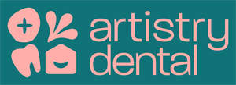

Trade Mark Journal No.2025/016 18 April 2025
UK00004184204 4 April 2025 (35,42,44)

- Class 35
- Marketing services in the field of dentistry; Management of health care clinics for others; Administrative management of health care clinics.
- Class 42
- Microbiome testing; Microbiological testing; Laboratory testing; Soil testing services.
- Class 44
- Dentistry; Cosmetic dentistry; Cosmetic dentistry services; Dentistry services; Sedation dentistry; Lifestyle counseling and consultancy for medical purposes; Lifestyle counselling and consultancy for medical purposes; Lifestyle care services; Advice relating to dentistry; Dental hygienist services; Dental clinic services; Health clinic services [medical]; Dental services; Sports medicine services; Health care in the nature of health maintenance organisations; Health care relating to naturopathy; Health care relating to osteopathy; Dentist services; Mobile dental care services; Providing medical advice in the field of dermatology; Health clinic services; Orthodontic services; Public health counseling; Public health counselling; Health care consultancy services [medical]; Cosmetic body care services provided by health spas; Dental consultations; Professional consultancy relating to health care; Medical health assessment services; Cosmetic surgery services; Cosmetic body care services; Consultation services relating to beauty care; Alternative medicine services; Cosmetic and plastic surgery clinic services; Health farm services [medical]; Providing medical advice in the field of geriatrics; Providing information relating to dentistry; Medical services in the field of treatment of chronic pain; Home health care services; Health care relating to hydrotherapy; Consulting services relating to health care; Teeth whitening services; Dental assistance; Restorative Dental Treatments; Cosmetic treatment; Cosmetic facial and body treatment services; Cosmetic treatment for the body; Surgery (Cosmetic -); Cosmetic treatment for the face; Cosmetic dental treatments; Cosmetic treatments for teeth bonding; Cosmetic treatments for teeth veneers; Veneers services; Teeth bonding services; Health care; Home health care services; Beauty care; Medical care; Health care in the nature of health maintenance organisations; Beauty care services; Hygienic and beauty care; Hygienic and beauty care services; Health care relating to naturopathy; Health care consultancy services [medical]; Medical care services; Human hygiene and beauty care; Managed health care services; Services for the care of the skin; Provision of health care services; Psychological care; Cosmetic body care services; Rental of medical and health care equipment; Consultancy relating to health care; Hygienic and beauty care for humans; Provision of hygienic and beauty care services; Provision of health care services in domestic homes; Health care relating to homeopathy; Cosmetic body care services provided by health spas; Professional consultancy relating to health care; Health care services for assisting individuals to stop smoking; Consulting services relating to health care; Health care relating to remedial exercise; Rental of equipment for human hygiene and beauty care; Consultancy services relating to health care; Health care services offered through a network of health care providers on a contract basis; Services for the care of the face; Skin care salons; Nursing care (Provision of -); Provision of nursing care; Advisory services relating to health care; Consultation services relating to beauty care; Mobile dental care services; Information services relating to health care; Medical care and analysis services relating to patient treatment; Personality testing [mental health services]; Consultancy in the field of body and beauty care; Bioresonance treatment and care; Health counseling; Health counselling; Advisory services relating to beauty care; Health spa services; Providing long-term care facilities; Mental health services; Consultation services relating to skin care; Health clinic services [medical]; Services for the provision of medical care information; Personality assessment services [mental health services].
Smiles By Arti Ltd
Representative: Carter Bond Solicitors